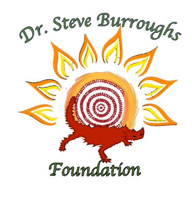

DR STEVE BURROUGHS FOUNDATION WEBSITE
This is my undergraduate final project (two members)- 2018 S2
Making an improvement on the Dr Steve Burroughs foundation website
Website develiable the improvement suggested by the client wants and needs.
Website shall target more organisation to sponsor the foundation
As well potential volunteer and donator.
Tools: Wordpress, Godaddy(Server)
If you want to see the completed project, Please click: 